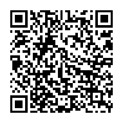

Hello!
You know what I like? Money! It's very cool but unfortunatly this website does not give my any money but instead takes it away!
Ok to be serious it's not like this website is causing me to go bankrupt or anything. This website costs me like less than £10 to run and thats including the instances I host. However in future I would like to expand out and get more powerful hardware for this site and my instances so I thought why not have some kind of donation thing on my site. So if you do like what I do and have some extra money laying around then maybe you could consider giving it to me :)
Don't worry, like I said before the site is not taking money out of me... well not that much, so if you don't want to or can't donate that fine no worries.
Monero Wallet: 43R2n7k7MNQGMgE6BPbcBM6LjfJ4seP6RSPckPHUoLJtiVRtFSw5ufwMUMtE9HEAJte7ivGeXPNg7bT3b8tqMRTJBZm95p6-QR Code
